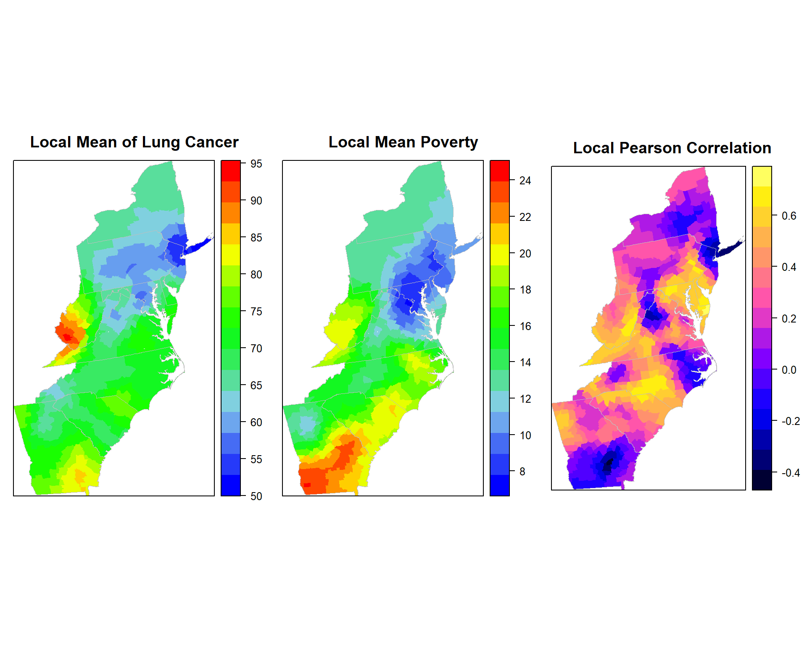

This lessons we will show GW modelling with GW summary statistics (Bruns-don et al. 2002; Fotheringham et al. 2002). Here, we will leanr how to calculate GW means, GW standard deviations, GW measures of skew and GW correlations which constitute a set of basic GW summary statistics.
library(GWmodel) ### GW models
library(sp) ## Data management
library(spdep) ## Spatial autocorrelation
library(gstat) ## Geostatistics
library(RColorBrewer) ## Visualization
library(classInt) ## Class intervals
library(raster) ## spatial data
library(gridExtra) # Multiple plot
library(ggplot2) # Multiple plotThe spatial polygon of lung cancer mortality rate and envrionmental covariate data could be found here.
# Define data folder
dataFolder<-"F:\\Spatial_Data_Processing_and_Analysis_R\\Data\\DATA_08\\"
COUNTY<-shapefile(paste0(dataFolder,"COUNTY_ATLANTIC.shp"))
state<-shapefile(paste0(dataFolder,"STATE_ATLANTIC.shp"))
df<-read.csv(paste0(dataFolder,"data_atlantic_1998_2012.csv"), header=T)df[5] <- lapply(df[5], as.numeric) # Cancer data to numeric
SPDF<-merge(COUNTY,df, by="FIPS")
names(SPDF)## [1] "FIPS" "ID" "x.x" "y.x" "REGION_ID"
## [6] "DIVISION_I" "STATE_ID" "COUNTY_ID" "REGION" "DIVISION"
## [11] "STATE" "COUNTY" "x.y" "y.y" "pop"
## [16] "cancer" "poverty" "smoking" "PM25" "NO2"
## [21] "SO2"polys<- list("sp.lines", as(state, "SpatialLines"), col="grey", lwd=.8,lty=1)
col.palette<-colorRampPalette(c("blue", "sky blue", "green","yellow", "red"),space="rgb",interpolate = "linear")We will use gwss() function to GW GW summary statistics of cancer rate and PM25, also pearson correlation coefficents between these two variables. We will use ** bandwith (bw)** = 48 and “bisqure” kerbel function. There are five kernel functions available in GW package:
gaussian: wgt = exp(-.5*(vdist/bw)^2);
exponential: wgt = exp(-vdist/bw);
bisquare: wgt = (1-(vdist/bw)2)2 if vdist < bw, wgt=0 otherwise;
tricube: wgt = (1-(vdist/bw)3)3 if vdist < bw, wgt=0 otherwise;
boxcar: wgt=1 if dist < bw, wgt=0 otherwise
If adaptive kernel = **TRUE*, means the bandwidth (bw) corresponds to the number of nearest neighbours (i.e. adaptive distance); default is FALSE, where a fixed kernel is found (bandwidth is a fixed distance)
After running gwss(), following output will be created:
X_LM GW mean
X_LSD GW Standard deviation
X_Lvar GW Variance GW Standard deviation squared
X_LSKe GW Skewness
X_LCV GW Coefficient of variation GW mean divided by GW Standard deviation
Cov_X.Y GW Covariance
Corr_X.Y GW Pearson Correlation
Note that X and Y should be replaced by the names of the actual variables being investigated.
gwss.pm25 <- gwss(SPDF,vars = c("cancer", "PM25"),
kernel="bisquare", adaptive=TRUE, bw=48)gwss.pm25## ***********************************************************************
## * Package GWmodel *
## ***********************************************************************
##
## ***********************Calibration information*************************
##
## Local summary statistics calculated for variables:
## cancer PM25
## Number of summary points: 666
## Kernel function: bisquare
## Summary points: the same locations as observations are used.
## Adaptive bandwidth: 48 (number of nearest neighbours)
## Distance metric: Euclidean distance metric is used.
##
## ************************Local Summary Statistics:**********************
## Summary information for Local means:
## Min. 1st Qu. Median 3rd Qu. Max.
## cancer_LM 52.780 64.937 69.631 73.579 92.558
## PM25_LM 19.998 24.872 26.294 27.119 31.146
## Summary information for local standard deviation :
## Min. 1st Qu. Median 3rd Qu. Max.
## cancer_LSD 4.7659 7.7152 9.1053 10.8309 16.2608
## PM25_LSD 1.1285 2.0743 2.4853 3.0355 5.0165
## Summary information for local variance :
## Min. 1st Qu. Median 3rd Qu. Max.
## cancer_LVar 22.7135 59.5248 82.9064 117.3081 264.413
## PM25_LVar 1.2734 4.3026 6.1765 9.2140 25.165
## Summary information for Local skewness:
## Min. 1st Qu. Median 3rd Qu. Max.
## cancer_LSKe -1.20800 -0.15435 0.13821 0.42117 1.8327
## PM25_LSKe -2.46009 -1.20737 -0.82817 -0.48497 0.5996
## Summary information for localized coefficient of variation:
## Min. 1st Qu. Median 3rd Qu. Max.
## cancer_LCV 0.068524 0.113617 0.131623 0.155867 0.2273
## PM25_LCV 0.040098 0.076753 0.093921 0.122776 0.2270
## Summary information for localized Covariance and Correlation between these variables:
## Min. 1st Qu. Median 3rd Qu. Max.
## Cov_cancer.PM25 -3.40683 8.16075 14.69411 22.66243 60.9193
## Corr_cancer.PM25 -0.18652 0.48146 0.62714 0.74329 0.9207
## Spearman_rho_cancer.PM25 -0.14856 0.40891 0.59095 0.71518 0.8852
##
## ************************************************************************p1.pm25<-spplot(gwss.pm25$SDF,"cancer_LM", main = "Local Mean of Lung Cancer",
sp.layout=list(polys),
col="transparent",
col.regions=col.palette(100))
p2.pm25<-spplot(gwss.pm25$SDF,"PM25_LM", main = "Local Mean of PM2.5",
sp.layout=list(polys),
col="transparent",
col.regions=col.palette(100))
p3.pm25<-spplot(gwss.pm25$SDF,"Corr_cancer.PM25", main = "Local Pearson Correlation",
sp.layout=list(polys),
col="transparent"
)grid.arrange(p1.pm25, p2.pm25, p3.pm25, ncol=3)gwss.smok<- gwss(SPDF,vars = c("cancer", "smoking"),
kernel="bisquare", adaptive=TRUE, bw=48)p1.smok<-spplot(gwss.smok$SDF,"cancer_LM", main = "Local Mean of Lung Cancer",
sp.layout=list(polys),
col="transparent",
col.regions=col.palette(100))
p2.smok<-spplot(gwss.smok$SDF,"smoking_LM", main = "Local Mean Smoking Prevelance",
sp.layout=list(polys),
col="transparent",
col.regions=col.palette(100))
p3.smok<-spplot(gwss.smok$SDF,"Corr_cancer.smoking", main = "Local Pearson Correlation",
sp.layout=list(polys),
col="transparent"
)grid.arrange(p1.smok, p2.smok, p3.smok, ncol=3)gwss.pov<- gwss(SPDF,vars = c("cancer", "poverty"),
kernel="bisquare", adaptive=TRUE, bw=48)p1.pov<-spplot(gwss.pov$SDF,"cancer_LM", main = "Local Mean of Lung Cancer",
sp.layout=list(polys),
col="transparent",
col.regions=col.palette(100))
p2.pov<-spplot(gwss.pov$SDF,"poverty_LM", main = "Local Mean Poverty",
sp.layout=list(polys),
col="transparent",
col.regions=col.palette(100))
p3.pov<-spplot(gwss.pov$SDF,"Corr_cancer.poverty", main = "Local Pearson Correlation",
sp.layout=list(polys),
col="transparent"
)grid.arrange(p1.pov, p2.pov, p3.pov, ncol=3)